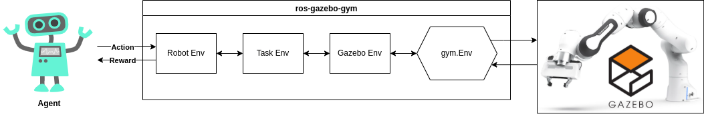

Welcome to ros_gazebo_gym’s documentation

Welcome to the ROS Gazebo Gym framework! This framework provides all the tools required for integrating ROS and Gazebo with gymnasium, streamlining the development and training of RL algorithms in realistic robot simulations. It comes equipped with various robot simulation environments, ready for use and further customization.
RL algorithms have recently achieved impressive results in games and simulated environments. For example, the DeepMind team trained an RL algorithm that outperforms humans in all of the Atari games and another one that beat professional Dota 2 players. However, translating these results to real-world robots requires considerable work. Most RL algorithms cannot be trained directly on real robots due to safety and time constraints, necessitating reliance on simulations. While Gymnasium provides a valuable toolkit for developing and comparing reinforcement learning algorithms, it is not directly compatible with the simulated environments often used in robotics research.
The ros-gazebo-gym framework effectively translates ROS Gazebo simulations into gymnasium environments, optimizing for real-world applicability. This enables the practical application of simulation-trained algorithms to real robots. However, users should be mindful of the real-to-sim gap and the necessity for additional adjustments and safety evaluations. Our objective with the ros_gazebo_gym package is to provide a foundational tool for RL research with real robots to bridge this gap and foster advancements in the field.
Package structure
The structure of this package was based on the openai_ros package created by the construct. As a result, each ROS Gazebo gymnasium environment is divided into three classes: a task environment, a robot environment and a gazebo environment.
Using this compartmentalised structure makes the code base easier to understand and is easier to extend. Each of these classes is responsible for one distinct task:
Task environment: Responsible for setting up the initial environment state, calculating the task reward, and checking whether an episode is done.
Robot environment: Responsible for reading the sensor data and controlling the actuators.
Gazebo environment: Responsible for connecting the Task and Robot environments to the Gazebo simulation.
Within the ROS Gazebo Gym framework, you’ll find two distinct gazebo environments: RobotGazeboEnv and
RobotGazeboGoalEnv. As these Gazebo environments directly inherit from the gym.Env and gym.GoalEnv classes and the
robot and task environments again inherit from these gazebo environments, all ROS Gazebo Gym task environments can be directly imported
like any other conventional gymnasium environment.
Contents
Getting Started
Development
API Documentation
Etc.